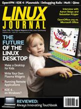

Shutdown Archive web server
Search:
Linux Journal
Issue #190/February 2010

Features
KDE 4 on Windows
by Stuart Jarvis
Set your Windows free with KDE.
Running Remote Applications
by Michael J. Hammel
It's just like being there.
The Future of the KDE Free Desktop
by Jos Poortvliet
An interview with lead KDE developers Aaron Seigo and Sebastian Kügler.
Re-invent Your Desktop with Plasma!
by Riccardo Iaconelli
An introduction to writing KDE plasmoids.
Columns
Reuven M. Lerner's At the Forge
Debugging Rails Applications
Dave Taylor's Work the Shell
Parsing Your Twitter Stream
Mick Bauer's Paranoid Penguin
Linux VPNs with OpenVPN
Kyle Rankin's Hack and /
Make a Local Mutt Mail Server
Dirk Elmendorf's Economy Size Geek
A Desktop for Our Little Penguin
Doc Searls' EOF
The Google Exposure
Reviews
OpenOffice.org vs. Microsoft Office
by Bruce Byfield
A Review of the Always Innovating Touchbook
by Daniel Bartholomew
In Every Issue
Current_Issue.tar.gz
Letters
upFRONT
New Products
New Projects
Archive Index
Shutdown Archive web server
Search:
Copyright © 1994 - 2018
Linux Journal
. All rights reserved.